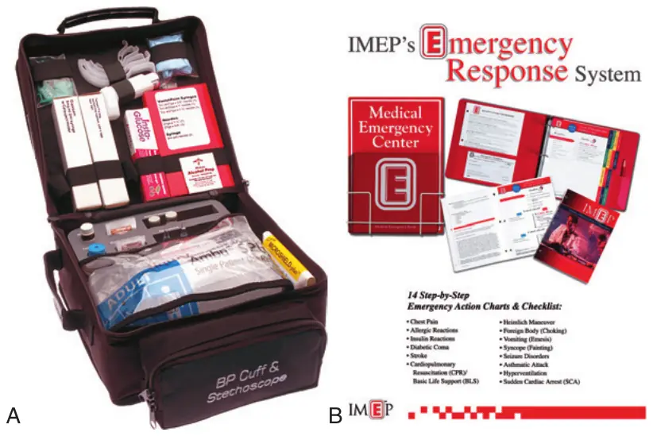

نسخه استخراجشده؛ ترجمه یا تأیید علمی انجام نشده است. وضعیت: captured
لیدوکائین ۲٪ با اپینفرین ۱:۱۰۰٬۰۰۰ — استاندارد مرجع. حدود ۶۰ دقیقه بیحسی پالپی، شروع سریع، و دارویی که همهچیز با آن مقایسه میشود.

مپیواکائین ۳٪ ساده — تنها ۵ تا ۱۰ دقیقه بیحسی پالپی در انفیلتراسیون، ولی ۲۰ تا ۴۰ دقیقه در بلاک عصبی. انتخاب کارهای کوتاه و بیمارانی که نباید اپینفرین بگیرند؛ کمترین وازودیلاتاسیون میان آمیدها از آنِ همین دارو است.
پریلوکائین ۴٪ ساده — ۱۰ تا ۱۵ دقیقه در انفیلتراسیون، ولی ۴۰ تا ۶۰ دقیقه در بلاک عصبی. وازودیلاتاسیونش از لیدوکائین کمتر است.
آرتیکائین ۴٪ با اپینفرین — نفوذ استخوانی خوب و نیمهعمر بسیار کوتاه (۰٫۵ ساعت)، چون علیرغم آمید بودن، زنجیرهی جانبی استریاش در پلاسما هم هیدرولیز میشود.
بوپیواکائین ۰٫۵٪ با اپینفرین ۱:۲۰۰٬۰۰۰ — حدود ۶۰ دقیقه بیحسی پالپی در انفیلتراسیون، ولی تا ۳۶۰ دقیقه در بلاک عصبی. این دارو برای کارهای طولانی و — مهمتر — برای کنترل درد پس از عمل است.
و یک قاعدهی مهم بلاک در برابر انفیلتراسیون: فرم سادهی مپیواکائین و پریلوکائین در انفیلتراسیون تقریباً بیفایده است ولی در بلاک کاملاً کارآمد — چون در بلاک، دارو دورتر از عروق پرخون محل جراحی رها میشود.
اول: هر کارتریج ۱٫۸ میلیلیتری چند میلیگرم دارو دارد؟ درصد را در ۱۸ ضرب کن.
و حالا حداکثر دوز توصیهشده (MRD) بر اساس FDA:
یک مثال تا عدد در ذهنت جا بیفتد: بیمار ۷۰ کیلویی، لیدوکائین ۲٪ با اپینفرین. ۷٫۰ × ۷۰ = ۴۹۰ میلیگرم، که زیر سقف ۵۰۰ است. تقسیم بر ۳۶ میلیگرم در کارتریج ≈ ۱۳ کارتریج. یعنی در بزرگسال سالم، MRD بهندرت محدودکننده است.
ولی همان حساب برای کودک ۲۰ کیلویی: ۷٫۰ × ۲۰ = ۱۴۰ میلیگرم، یعنی کمتر از ۴ کارتریج. اینجاست که MRD واقعاً معنا پیدا میکند — و به همین دلیل، دوز کودک و سالمند و بیمار ناتوان باید همیشه حساب شود، نه تخمین زده.
نوع سؤال: ساخت کلمه · 9 خانه
حروف منبع: ی · آ · ئ · ت · ر · ی · ن · ک · ا